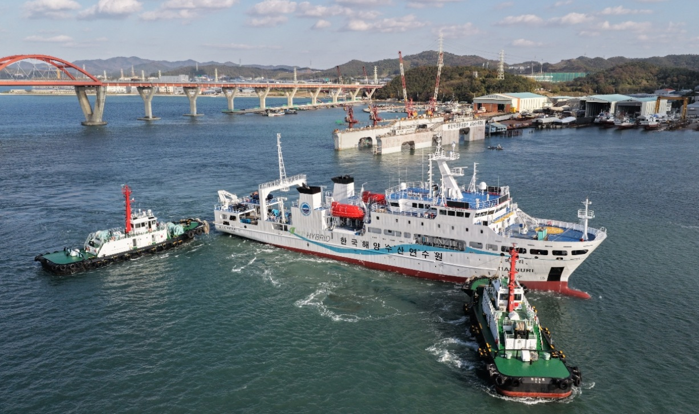
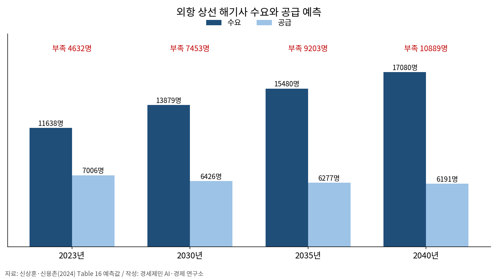
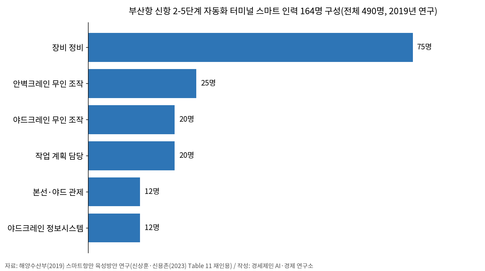

[해양 AI 융복합⑮] 원격운항자 국가자격 신설 과제와 줄어드는 한국인 선원
세계 해기사 2030년까지 11만여 명 더 필요
원격운항자 양성 체계와 자동화 부두 인력
AI경제저널=김갑봉 기자 | 해양수산부(해수부)는 2026년 7월 「2026 한국선원통계연보」를 펴냈다. 2025년 말 취업선원 6만543명 중 한국인은 2만7372명으로 1년 새 1359명 줄었다. 한국인 선원 수급 전망과 자율운항선박·자동화 부두가 요구하는 새 인력을 어떻게 기르려 하는지 사실로 짚는다.
60세 이상 43.9%인 한국인 선원
외국인 선원은 650명 늘어 3만3171명이다. 한국인 비중은 2021년 54.3%에서 2025년 45.2%로 내려갔다.
한국인 선원 중 60세 이상은 1만2002명으로 43.9%다. 40~50대가 30.9%, 40대 미만이 25.2%다. 40대 미만 비중은 2023년 22.1%, 2024년 24.4%에서 올랐다.
김혜정 해수부 해운물류국장은 2023년 선원 일자리 혁신방안 발표 뒤 청년 선원 비중은 늘었지만 고령화 문제가 여전하다고 했다.
해수부는 9월 4일 청년 해기사 취업률을 높이려고 관계기관 회의를 열었다. 국립한국해양대와 국립목포해양대, 한국해양수산연수원, 해운업계, 선원 노동단체, 해기사협회가 함께했다.
해수부는 노사와 함께 혁신방안으로 외항 선원 근무 여건을 개선했다고 밝혔다. 다만 경력 단절 해기사가 돌아오고 이직률이 줄면서 신규 청년 해기사 일자리가 줄었다고 했다.

국내외 해기사 수요와 공급 전망
신상훈·신용존(2024)은 외항 상선 해기사 수요를 예측했다. 2023년 1만1638명에서 2030년 1만3879명으로 늘 것으로 봤다. 공급은 같은 기간 7006명에서 6426명으로 줄 것으로 예측했다.
논문 계산으로 2030년 부족 인원은 7453명이다. 외국인 해기사 고용을 셈에 넣어도 2645명이 모자랄 것으로 예측했다.

산업통상부와 해수부가 10월 12일 공개한 자율운항선박 기본계획 문서는 추진 배경에 해기인력 부족을 적었다. 2032년 신규 수요 인력 3866명에 견줘 공급은 1876명(48.5%) 수준이다. 산출 범위는 밝히지 않았다.
발틱국제해운협의회(BIMCO)와 국제해운회의소(ICS)는 2026년 6월 25일 「선원 인력 보고서 2026」을 냈다. 보고서 추산으로 세계 상선 8만5148척에서 선원 257만 명이 일한다.
올해는 선원 훈련·자격 국제협약(STCW) 자격을 갖춘 해기사가 3만9100명 모자라고 부원은 5만6890명 남는다는 추산이다. 2021년 보고서가 추산한 그해 부족분은 2만6240명이었다.
보고서 전망으로는 2030년까지 해기사가 11만3735명 더 필요하다. 해마다 2만2747명이 새로 들어와야 한다는 계산이다.
항해·기관 통합 원격운항 해기사 제언
임성주·신용존(2022)은 2020년 선행 연구를 인용해 자율화 단계마다 배를 다루는 주체를 소개했다.
선원이 타고 원격제어를 받는 2단계는 선원과 이페어러(e-farer)가 함께 맡는다고 분류했다. 선원이 타지 않는 3단계와 완전자율 4단계는 이페어러 몫으로 봤다.
이페어러는 「내일의 선원」이라는 뜻으로, 새 기술을 갖추고 선박 운항을 통제하는 사람이다.
논문은 원격제어와 자동화로 항해사와 기관사 직무 구분이 없어진다고 봤다. 그래서 항해·기관 통합 직무를 맡는 원격운항 해기사를 기르자고 제언했다.
논문에는 해기사가 타는 자율운항선박이 들어오면 교육을 나눠 맡자는 안도 있다. 해사계 대학은 원격운항 해기사를, 해사고는 기존 해기사를 기르자는 안이다. 기존 해기사를 원격운항 해기사로 바꾸는 교육과 자격 인증은 한국해양수산연수원이 준비하자고 했다.
기본계획에 담긴 원격운항자 자격·훈련
기본계획 문서에는 원격운항자 등 새 전문인력 기능·역할 정립과 국가자격제도 신설이 필요하다는 진단이 있다. 선원 중심 교육·훈련에서 원격운항·육상관리 직무체계와 새 자격제도로 옮겨 가는 방향이다.
세부 과제는 자율운항선박법 제15조에 따른 전문인력 양성기관 지정과 신규 운항인력 교육·훈련체계 마련이다. 직무전환 인증제도 도입을 포함한 직무전환 시범운영도 들어 있다.
국제해사기구(IMO)는 올해 5월 제111차 해사안전위원회에서 비강제 기준인 자율운항선박 국제기준(MASS 코드)을 채택했다. 코드 14장은 원격운항자가 STCW 기준 이상 자격을 갖추고 원격운항 추가 훈련을 받도록 권고한다.
각국 해사 당국은 원격운항센터 근무 경력을 면허 갱신 때 승선경력과 같게 볼 수 있다.
IMO는 2022년 STCW 협약 전면 검토를 결정하고 2024년 본격 착수했다. 해사안전위원회는 2025년 6월 완료 목표를 2031~2032년에서 2029~2030년으로 앞당겼다.
2019년 연구 속 자동화 부두 스마트 인력
신상훈·신용존(2023)에는 자동화 부두 인력 구성이 실려 있다. 해수부 2019년 스마트항만 육성방안 연구를 인용한 수치다. 이 연구는 부산항 신항 2-5단계 자동화 터미널 전체 인원 490명 중 스마트 인력을 164명으로 잡았다. 반자동인 2-4단계 터미널은 524명 중 77명이다.
164명 중 장비 정비가 75명으로 가장 많다. 안벽크레인 무인 조작은 25명, 야드크레인 무인 조작과 작업 계획 담당은 20명씩이다. 본선·야드 관제와 야드크레인 정보시스템은 12명씩이다.

논문이 예측한 스마트 항만 인력 수요는 2030년 451명, 2035년 1361명이다.
현장 전문인력 양성과 재직자 교육은 해수부가 7월 내놓은 피지컬 AI 항만혁신 전략에 담긴 인력 계획이다.
참고문헌
- 해양수산부, 「지난해 취업선원 총 60,543명, 한국인 선원은 매년 감소 추세」(2026 한국선원통계연보 발간), 2026년 7월 3일 등록(7월 6일 조간). https://www.mof.go.kr/doc/ko/selectDoc.do?docSeq=67291&menuSeq=971&bbsSeq=10
- 해양수산부, 「(동정) 황종우 해수부 장관, 청년 해기사 취업률 제고를 위한 관계기관 회의 주재」, 2026년 9월 4일. https://www.mof.go.kr/doc/ko/selectDoc.do?docSeq=68541&menuSeq=971&bbsSeq=10
- 산업통상부·해양수산부, 「자율운항선박 개발 및 상용화 촉진 기본계획안」(2026.6.24 자율운항선박 정책위원회), 산업통상부 보도·참고자료 「K-조선 모두의 힘으로, M.AX 상생항로 나선다」(2026년 10월 12일, 10월 13일 조간) 별첨으로 공개. https://www.motir.go.kr/kor/article/ATCL3f49a5a8c/172280/view
- 해양수산부, 「항만이 ‘하나의 거대한 지능형 로봇’으로, 피지컬 AI 항만혁신 본격 추진」, 2026년 7월 22일(7월 23일 석간). https://www.mof.go.kr/doc/ko/selectDoc.do?docSeq=67543&bbsSeq=10&menuSeq=971
- IMO, Resolution MSC.595(111) 「International Code of Safety for Maritime Autonomous Surface Ships(MASS Code)」, 2026년 5월 21일 채택. https://wwwcdn.imo.org/localresources/en/KnowledgeCentre/IndexofIMOResolutions/MSCResolutions/MSC.595(111).pdf
- IMO, "Comprehensive review of the STCW Convention and Code - FAQ"(2026년 11월 18일 열람). https://www.imo.org/en/mediacentre/hottopics/pages/comprehensive-review-of-the-stcw-convention-and-code-faq.aspx
- BIMCO, "BIMCO and ICS report warns of potential future shortage of officers"(Seafarer Workforce Report 2026), 2026년 6월 25일. https://www.bimco.org/news-insights/press-media/press-releases/2026/0625-workforce-report/
- ICS, "New BIMCO/ICS Seafarer Workforce Report warns of serious potential officer shortage", 2021년 7월 28일. https://www.ics-shipping.org/?p=12692
- 임성주·신용존, 「자율운항선박 도입에 따른 해기사 직능 변화와 인력양성에 관한 연구」, 『한국항해항만학회지』 제46권 제1호, 2022년 2월, 1~10쪽. https://doi.org/10.5394/KINPR.2022.46.1.1
- 신상훈·신용존, 「스마트 해운항만물류 인력 수요 예측에 관한 연구」, 『한국항해항만학회지』 제47권 제3호, 2023년 6월, 155~166쪽. https://doi.org/10.5394/KINPR.2023.47.3.155
- 신상훈·신용존, 「외항 상선 해기사 인력 수요 및 공급 예측에 관한 연구」, 『한국항해항만학회지』 제48권 제1호, 2024년 2월, 7~16쪽. https://doi.org/10.5394/KINPR.2024.48.1.7
[사진·도표 출처]
- [사진1] 해양수산부 보도자료 「스마트교육장비 갖춘 3,200톤급 수산계 고교 공동실습선 ‘해누리호’ 취항」 붙임 사진, 2025년 12월 11일 등록(12월 12일 10시), 공공기관 보도자료 사진(출처 표시). https://www.mof.go.kr/doc/ko/selectDoc.do?docSeq=64147&menuSeq=971&bbsSeq=10
- [도표1] 경세제민 AI·경제 연구소 작성. 자료 신상훈·신용존(2024) Table 16
- [도표2] 경세제민 AI·경제 연구소 작성. 자료 신상훈·신용존(2023) Table 11(해양수산부(2019), 「스마트항만 육성방안 연구」 130·132쪽 재인용)
관련기사
- [해양 AI 융복합⑭] 항만 자동화 앞 '보호 대책 먼저' 요구한 항운노련과 해외 항만의 생산성 이득 공유
- [해양 AI 융복합⑬] 2032년 1단계 9선석 진해신항, 2조원 장비와 단일 운영사로 짜는 피지컬 AI 항만
- [해양 AI 융복합⑫] 실증·인증 한데 모을 광양 첨단항만기술원 구상, 2027년 타당성 검토 앞둔 입지 논쟁
- [해양 AI 융복합⑪] 2028년 완전자동화 부두 앞둔 인천 신항, 크레인은 중국산·운영 프로그램은 국산
저작권자 © AI경제저널 무단전재 및 재배포, AI학습 및 활용 금지